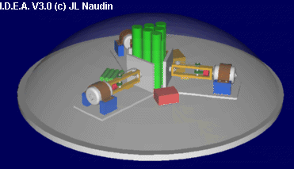

created on 07-29-98 - JLN Labs
- last update on 29-05-08
All informations in this
page are published free and are intended for private/educational
purposes and not for commercial applications
 The
Impulse Drive Experiment
by J-L Naudin, Easy to build, test
by yourself.
The
Impulse Drive Experiment
by J-L Naudin, Easy to build, test
by yourself. The Powerball, an interesting and a
fun device...
The Powerball, an interesting and a
fun device...About Inertia : Suggested document to be read
The Dr James F. Woodward home page
Origin of Inertia " How inertia originates in the cosmos. " by James F. Woodward
Radiation reaction " The weird world of radiation reactions where you seem to get energy from nowhere and things move before you begin to push them. " by James F. Woodward
Transient Mass Fluctuations " Where it's all put together and we end up doing strange things. " by James F. Woodward
The "MACH EFFECT" Equation ( STAIF 2005 ) - Power Point presentation
| Method
for producing thrust with "MACH" effect
manipulated by alternating electromagnetic fields No. Publication (Sec.) :US2006065789 Date de publication :2006-03-30 Inventeur :WOODWARD JAMES F (US); MARCH PAUL (US); MAHOOD THOMAS L (US) Déposant :CALIFORNIA STATE UNIVERSITY FU (US) Abstract : A method for producing thrusts in devices where a "Mach" effect mass fluctuation is driven by applying a high voltage, high frequency electrical signal to capacitive circuit elements made with high dielectric constant core material and at the same time applying a current signal of the same frequency to inductive circuit elements arranged so that the magnetic fields produced thereby thread the capacitors perpendicular to the electric fields between their plates. With appropriate relative phase established between the electric and magnetic fields in the dielectric material between the plates of the capacitor, the Lorentz force acting on the lattice ions in the dielectric yields a net force. That net force is a consequence of the fact that in each cycle when the Lorentz force acts in one direction the effective masses of the ions are different from their effective masses in the parts of each cycle where lattice forces act to restore the initial configuration. Operated at sufficiently high frequencies and powers, such devices can produce useful levels of thrust. |
| Method
and apparatus for generating propulsive forces
without the ejection of propellant No. Publication (Sec.) :US6098924 Date de publication :2000-08-08 Inventeur :MAHOOD THOMAS (US); WOODWARD JAMES (US) Déposant :CALIFORNIA STATE UNIVERSITY FU (US) Abstract : Mach's principle and local Lorentz-invariance together yield the prediction of transient rest mass fluctuations in accelerated objects. These restmass fluctuations, in both principle and practice, can be quite large and, in principle at least, negative. They suggest that exotic space time transport devices may be feasible, the least exotic being "impulse engines", devices that can produce accelerations without ejecting any material exhaust. Such "impulse engines" rely on inducing transient mass fluctuations in conventional electrical circuit components and combining them with a mechanically coupled pulsed thrust to produce propulsive forces without the ejection of any propellant. The invention comprises a method of producing propellant-less thrust by using force transducers (piezoelectric devices or their magnetic equivalents) attached to resonant mechanical structures. The force transducers are driven by two phase-locked voltage waveforms so that the transient mass fluctuation and mechanical excursion needed to produce a stationary thrust are both produced in the transducer itself. |
See the Field Effect Propulsion page
 Email
: JNaudin509@aol.com
Email
: JNaudin509@aol.com
Return to the Advanced Propulsion page